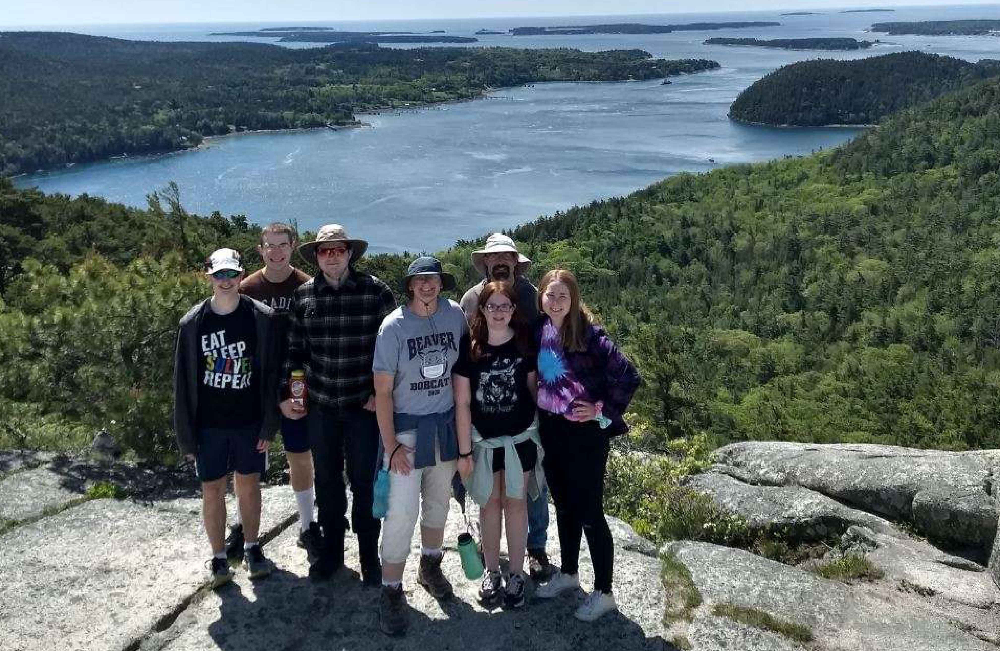

Joshua Mateer
This site has been certified dark-mode friendly.
About me
I'm a junior CS student at the University of Pittsburgh. I love playing complex board games, as well as designing them.
I spend a lot of time hanging out with a group called RUF, which is a Christian fellowship group here.
I love playing ultimate frisbee and stuff with friends, though I certainly wouldn't call myself a pro. I also enjoy doing all sorts of handy stuff,
such as woodworking, carpentry, or game printing.


Field of Study
I'm studying Computer Science and Digital Narratives & Interactive Design, especially focusing on game design.
I'm hoping to go into a career in cybersecurity, while putting together an indie game on my own or with a few friends in my spare time.
Why UX Design and Usability Testing? Where do you see yourself within this nexus of UX design and product development?
I've always been interested in designing different products, so I want to make sure that the products I'm creating are usable.
I could definitely see myself being more involved in the development side of things rather than the design, though of course they're very interconnected.
Where do you want your knowledge and skills to take you?
I would love to work as a software engineer or a white-hat hacker of some kind, though I'm not exactly sure which one yet.
Either way, I would love to be on the cutting edge of technology, helping to reach higher heights and helping people to become safer with the technology that runs so much of our lives.